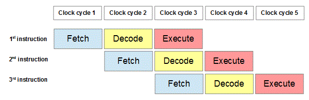
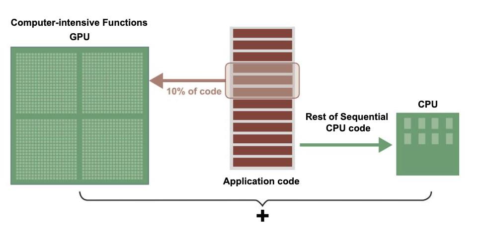
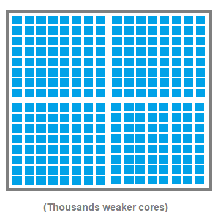

Define the terms hardware and software
Hardware – physical parts of a computer system
Software – instructions and programs to make the computer work
State what is meant by input and output devices
Input – hardware used to put data into a computer
Output – hardware used to get data from a computer, for example a screen, printer, or actuator. An actuator produces physical movement in response to computer signals.
Explain what is meant by a peripheral
A peripheral is external to the computer and connects to the computer, for example a printer, keyboard, or mouse.
| Input devices | |
|---|---|
| Manual | Automatic |
|
Automatic data input methods:
Data logging:
|
Explain the need for, and use of, registers in the functioning of the processor
Program Counter (PC)
- Holds the address of the next instruction to be executed by the processor
Memory Address Register (MAR)
- Holds the address of the location where data will be stored or retrieved from memory
-
Stores the position/address in memory of the location containing either:
- the next piece of data to be read, or
- the next instruction to be used
Memory Data Register (MDR)
- The contents of the address specified in the MAR are copied to the MDR
- This may be an instruction, operation, or data to be used with an instruction
- It may contain data to be copied to an address
Current Instruction Register (CIR)
- Holds the instruction while it is being decoded and executed
- The contents of the MDR are copied into the CIR if it is an instruction
- The operation code (opcode) is the first part of the instruction
- The remainder of the instruction is the address of the data to be used in the operation, or the data itself if an immediate operand is used
Accumulator
- Holds the data currently being processed
- Results of processing are stored in the accumulator
- The results of arithmetic operations are carried out in the ALU
- All input/output goes through the accumulator
Describe 4 steps in the Fetch–Decode–Execute (FDE) cycle

- The CPU reads the contents of the Program Counter (PC) to find the address of the next instruction to be fetched, decoded, and executed.
- As soon as it is read, the PC increments.
- The contents from the PC are then copied into the Memory Address Register (MAR).
- The address in the MAR is sent across the address bus to locate the contents in RAM.
- The control unit sends a read signal across the control bus to read from the memory address.
- The contents of this address are copied to the Memory Data Register (MDR) via the data bus.
- The MDR now holds the instruction that must be executed.
- The instruction in the MDR is then copied to the Current Instruction Register (CIR), as the MDR may be needed again to complete execution.
Key words: contents, copied, send / transferred
Explain the need for, and describe the use of, buses to convey information
- A bus is a parallel group of wires that is able to transmit groups of bits together from one location or register to another in the processor
- Control bus – transmits control signals from the control unit to the rest of the processor
- Address bus – carries the location address to where the data is going
- Data bus – carries the data from one register to another
What is a register?
- Temporary storage or memory location inside the CPU
- Used for a single, specific purpose
- Has faster access speed than RAM or secondary storage
RAM, ROM and Virtual Memory
| Random Access Memory (RAM) | Read Only Memory (ROM) |
|---|---|
Type of software:
Reason:
|
Type of software:
Reason:
|
An embedded processor has control systems
Explain why the control software is stored on ROM and explain why it will be necessary to have some RAM.
- The control software does not need to be changed
- Cannot be changed
- Will not need loading or installing
- Immediately available when switched on
ROM and the start-up process
- Contains the computer start-up instructions
- Loads settings and configuration (CMOS / NVRAM)
- Initialises and checks hardware and peripheral devices and carries out a POST check
- Reports errors
- Determines the drive on which the operating system is stored
- Loads the bootstrap / operating system into main memory
What is Virtual Memory?
- Used when the amount of RAM available is insufficient
- Used to store instructions and data
- Uses secondary storage
Drawbacks
- Slower access speeds as sections of programs must be moved from secondary storage to RAM
- Disk thrashing – occurs when RAM is too full and the system repeatedly swaps data between RAM and the hard drive
Features of Von Neumann and Contemporary Processors
| Von Neumann Architecture
|
Harvard Architecture
|
|---|---|
| Instructions and data stored in the same area of memory | Data and instructions are stored in separate memory units |
| Fetches data and instructions sequentially and follows the Fetch–Decode–Execute cycle | Can fetch data and instructions at the same time (fetching the next instruction while reading or writing data) |
| Uses a single bus for both data and instructions | Uses different buses for data and instructions |
| Single control bus | Separate control buses |
| Slower due to the Von Neumann bottleneck (caused by using the same bus) | Faster because data and instructions are accessed in parallel |
| Used in general-purpose computers (e.g. PCs and laptops) | Common in embedded systems and microcontrollers, including Digital Signal Processing (DSP) systems |
| Can be optimised using pipelining | Can use different word lengths for data and instructions to optimise memory usage |
| Same word length for both data and instructions | Different word lengths may be used |


Exam note:
Do not use the phrase
“instructions and data are stored in the same memory location”.
Examiner Tips and Tricks
You will not be asked about specific aspects of “contemporary processor architecture” apart from those on this page. You may be asked to show an awareness of how contemporary processors differ from a pure Von Neumann architecture in more open questions.
Features of contemporary processors
- Two separate areas of memory — one for instructions and one for data — meaning instructions and data can be accessed concurrently
- Different sets of buses — one for instructions and one for data — allowing instructions and data to be accessed concurrently
- Pipelining — while an instruction is being executed, the next instruction can be decoded and the subsequent one fetched
- Use of cache — a small amount of high-performance memory next to the CPU which stores frequently used data and instructions
- Virtual cores / Hyper-threading — treating one physical core as two virtual cores
- Multiple cores — each core acts as a separate processing unit
- Onboard graphics — built-in circuitry for graphics processing
Modern processors are hybrids that combine features of both Von Neumann and Harvard designs. The main memory (RAM) stores both data and instructions together (like Von Neumann). Inside the CPU, there are separate caches for data and instructions (like Harvard). This allows simultaneous access to data and instructions for higher performance.
Contemporary Processors – CISC vs RISC

Example:
Multiply value in memory location X by value in memory location Y; store result back into location X. Registers A and B are available.
CISC Assembly:
IMUL X, Y
RISC Assembly:
LOAD A, X
LOAD B, Y
PROD A, B
STORE X, A
| RISC | CISC |
|---|---|
| Smaller instruction set | Larger instruction set |
| Requires less complex hardware, little cooling, lower manufacture cost, fewer transistors | Requires more complex hardware, more cooling, more expensive to manufacture, more transistors |
| One clock cycle to execute an instruction | Multiple clock cycles to execute an instruction |
| Tends to use less energy | Tends to use more energy |
| Uses more RAM | Uses less RAM |
| Easier to pipeline | Difficult to pipeline |
| Compiler has to do more work to translate code into machine code | Compiler has to do less work to translate code into machine code |
| Fewer addressing modes (drawback) | More addressing modes |
| Suitable for applications requiring high-speed processing and efficiency, such as embedded systems and mobile devices, due to faster, simpler instructions | Preferred in general-purpose computers where ease of programming is important, as complex instructions can simplify software |
What affects CPU performance and why?
Cores
The number of cores has an impact on performance. Each core is a processing unit, giving the potential for multiple instructions to be run simultaneously.
Depending on the situation, four cores running at 100 MHz may perform better than one core running at 300 MHz.
Cache
The amount of cache (and cache levels) benefits performance. Cache helps reduce the bottleneck caused by RAM being slow.
No matter how fast the clock speed is, access time to RAM will always be a limiting factor.
Contemporary processors
Contemporary processors have performance-enhancing features such as pipelining and out-of-order execution.
Harvard architecture processors benefit from having separate data and instruction memories.
In conclusion, performance cannot be judged solely on clock speed. A processor without cache may be outperformed by a processor with a slower clock speed but access to cache.
Processors also include other performance enhancements such as pipelining.
Pipelining
Pipelining is a technique used by some processors to improve performance. Without pipelining, the steps in the Fetch–Execute cycle take place one after the other.
- Allows the next instruction to be fetched whilst the previous one is being decoded or executed
- Allows overlapping of different parts of the Fetch–Decode–Execute cycle
- Increases throughput — increases the number of instructions processed in a given time period
- Prevents the CPU from waiting and reduces idle components
- Common in modern microprocessors used in personal computers
- Can allow as many as six instructions to be executed simultaneously
The performance of a computer system can be improved by adding more RAM
Explain why adding more RAM improves performance
- Allows more active, running, and temporary data to be stored in RAM
- Reduces the need to use virtual memory
- RAM is faster to access than virtual memory or secondary storage
- Data in virtual memory must be swapped into RAM before use
- Using RAM rather than virtual memory reduces the risk of disk thrashing
- Faster boot-up and shutdown times and reduced load/access times
- More than one processor controlled by a complex operating system
- Working together to perform a single job which is split into tasks
- Each task may be performed by any processor
Advantages and disadvantages of a parallel processor compared with a single processor system
Advantages
- Increased speed — multiple instructions processed at once
- Complex tasks performed efficiently
- Allows faster processing
- More than one instruction (of a program) is processed at the same time
- Different processors can handle different tasks or parts of the same job
Disadvantages
- Not suitable for some programs
- Programs may need to be written specially or rewritten
- Operating system is more complex
- Must ensure synchronisation
- Program must be written in a suitable format
- Programs are more difficult to test, write, and debug
Graphics Card (GPU)
- Specialised processor for handling graphics rendering and image processing
- Acts as a co-processor, working alongside the CPU
- Contains hundreds or thousands of simpler cores designed for parallel tasks
Purpose in Gaming
- Creates 3-D images — builds wireframes, rasterises (fills in pixels), and adds lighting, texture, and colour
- Handles this process around 60 times per second for smooth gameplay
Why it’s Needed
- Over 1 million pixels per screen image at common resolutions
- Graphics processing is too demanding for the CPU alone
- Offloads intensive tasks from the CPU to improve overall performance
Benefits
- Faster image rendering
- Smoother gameplay
- Better visual quality and responsiveness
Co-processor
In some computer systems, a co-processor may be used. A co-processor is:
- An additional processor used for a specific task
- Improves processing speed by executing tasks concurrently
- Example: maths co-processor / floating-point accelerator
Example: Converting a colour image to greyscale using a GPU
- Split the image — the GPU divides the image into thousands of small blocks or pixels so each can be worked on separately
- Send tasks to many cores — each GPU core receives a small piece of the image (e.g. one pixel or a group of pixels)
- Process pixels in parallel — all cores run the same instructions (e.g. adjusting colour, brightness, or applying a filter) at the same time on different pixels
- Combine the results — once all cores finish, the GPU combines the processed pixels into a single complete image
- Display or save the image — the final image is sent to the screen or stored in memory
| Feature | CPU | GPU |
|---|---|---|
| Primary Role | General-purpose computing and system control | Specialised for graphics rendering and parallel processing |
| Architecture |
Fewer, more powerful cores designed for sequential tasks
(fewer strong cores)  |
Hundreds or thousands of simpler cores designed for parallel tasks
(many weaker cores)  |
| Best For |
|
|
| Magnetic Storage | Optical Storage | Solid State Storage |
|---|---|---|
|
Types: HDD (internal and external), Magnetic tapes How data is stored and read Data is stored as magnetised regions on a spinning disk (platter). A read/write head changes the magnetic direction to represent binary data (0s and 1s). The data is read using the read/write head that moves across the spinning disk and detects the magnetic changes, converting them into binary data. Advantages
Disadvantages
|
Types: CDs, DVDs How data is stored and read Data is stored as tiny indentations (pits) and flat areas (lands) on a reflective disc. A laser burns the pattern onto the disc surface. A laser reads the data stored on the disc. Advantages
Disadvantages
|
Types: SSDs, USB flash drives, Memory cards How data is stored and read Solid-state storage stores data using NAND flash memory chips. Each memory cell holds an electric charge, representing binary data (0s and 1s). To read data, the storage controller sends an electric signal to a memory cell. Charge detection:
Advantages
Disadvantages
|